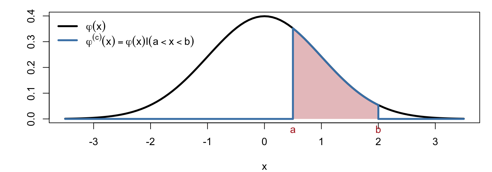
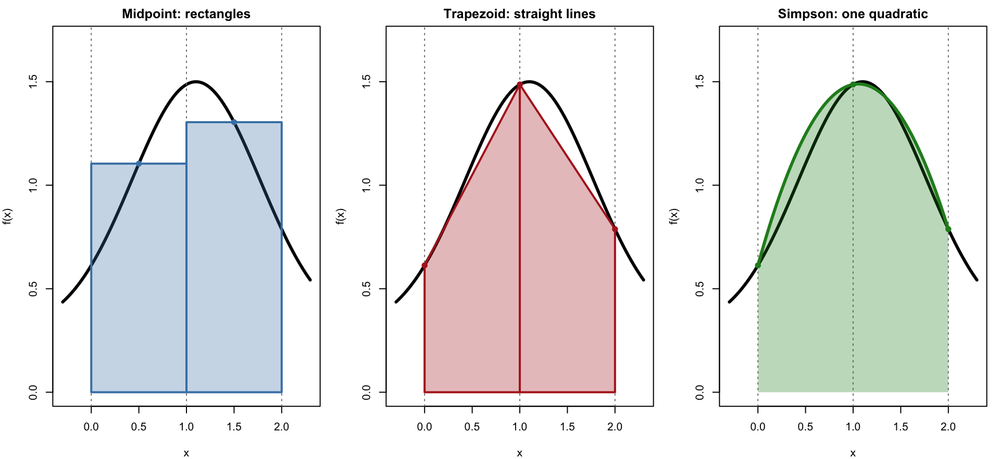
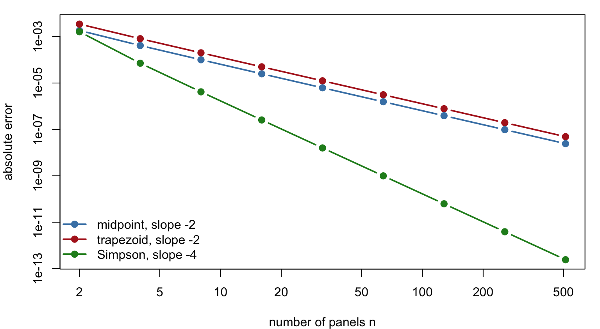
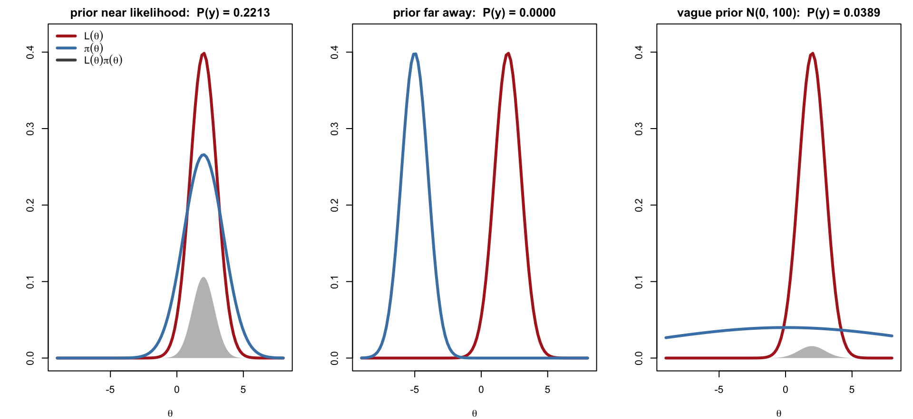
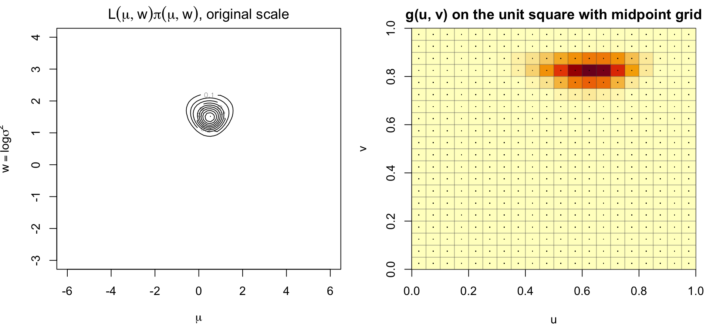
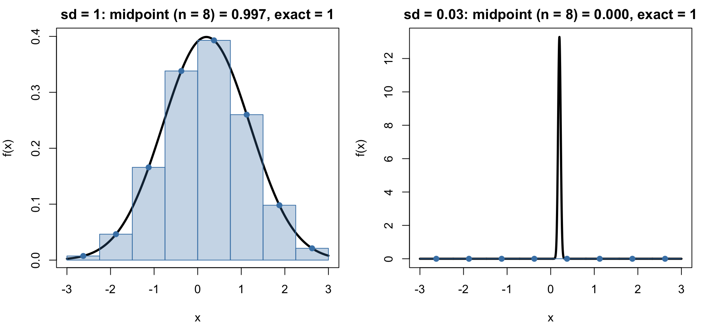
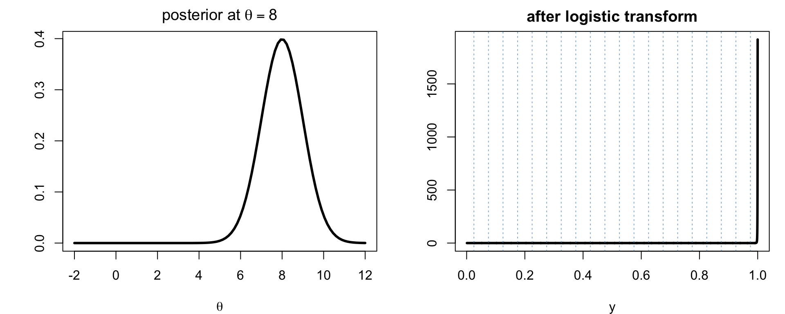
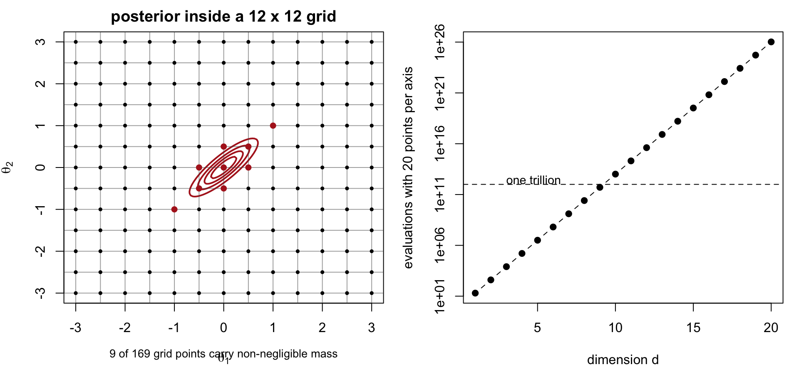

Equally spaced y points (red ticks, right) map to unequally spaced x points (red ticks, middle). The two shaded areas are equal.
Calculating Probabilities
For X with density \varphi(x), e.g. \varphi(x) = \frac{1}{\sqrt{2\pi}}e^{-x^2/2}, P(a<X<b) = \int_a^b \varphi(x)\,dx = \int_{-\infty}^{\infty}\varphi^{(c)}(x)\,dx,
\qquad \varphi^{(c)}(x) = \varphi(x)\,I(a<x<b)
Either integrate \varphi directly over the finite interval [a,b], or
integrate the truncated function \varphi^{(c)} over the whole line; the indicator does the cutting
The second view matters when [a,b] is not the natural range: the same machinery computes P(X\in S) for any set S and, more generally, E[h(X)] = \int h(x)\varphi(x)\,dx.

2. Quadrature Rules
Midpoint Rule
Divide [a,b] into n panels of width h_n = (b-a)/n and use the height of f at the middle of each panel: \tilde A_n = h_n\sum_{i=1}^n f\!\Big(a + \big(i-\tfrac12\big)h_n\Big)
Does not evaluate f at the endpoints, which is convenient when f is singular or undefined there (e.g. g(y) at y = 0, 1 after a logistic transform)
Trapezoidal Rule
Approximate f on each panel [x_{i-1},x_i] by the straight line through \big(x_{i-1},f(x_{i-1})\big) and \big(x_i,f(x_i)\big); the panel area is a trapezoid: \int_{x_0}^{x_1} f(x)\,dx \approx \tfrac12\big[f(x_0)+f(x_1)\big](x_1-x_0)
Summing over n panels with x_i = a + ih_n, interior points are shared by two panels:
\begin{aligned}
\tilde A_n &= \tfrac12 h_n\Big[f(a) + f(a+h_n) + f(a+h_n) + \cdots + f\big(a+(n-1)h_n\big) + f(b)\Big] \\
&= \tfrac12 h_n\big[f(a) + f(b)\big] + h_n\sum_{i=1}^{n-1} f(a+ih_n)
\end{aligned}
Error: \;A - \tilde A_n = -\dfrac{(b-a)h_n^2}{12}\,f''(\xi) = O(1/n^2), twice the midpoint error and of opposite sign
Exact for linear f
Simpson’s Rule
Take n = 2m (even) and h_n = (b-a)/n. On each pair of panels [x_0,x_1] with x_1 - x_0 = 2h_n, replace f by the quadratic \tilde f through f(x_0), f\big(\tfrac{x_0+x_1}{2}\big), f(x_1). Integrating the quadratic exactly gives \int_{x_0}^{x_1}\tilde f(x)\,dx = \frac{x_1-x_0}{6}\Big[f(x_0) + 4f\big(\tfrac{x_0+x_1}{2}\big) + f(x_1)\Big]
Summing over the m pairs, each even interior point is shared by two pairs:
\begin{aligned}
\tilde A_{2m} &= \frac{2h_n}{6}\Big[f(a) + 4f(a+h_n) + f(a+2h_n) + f(a+2h_n) + 4f(a+3h_n) + \cdots + f(b)\Big] \\
&= \frac{h_n}{3}\Big[f(a) + f(b) + 4\sum_{i=1}^{m} f\big(a+(2i-1)h_n\big) + 2\sum_{i=1}^{m-1} f\big(a+2ih_n\big)\Big]
\end{aligned}
Simpson = \tfrac23\,\text{Midpoint} + \tfrac13\,\text{Trapezoid} on the same pair of panels
The Three Rules on One Panel Pair

Simpson uses the same three points as the trapezoid rule on two panels, but fits a parabola instead of two line segments.
Implementation in R
midpoint <-function(f, a, b, n) { h <- (b - a) / n; h *sum(f(a + (1:n -0.5) * h)) }trapezoid <-function(f, a, b, n) { h <- (b - a) / n; x <- a + (0:n) * h h * (sum(f(x)) -0.5* (f(a) +f(b))) }simpson <-function(f, a, b, n) { stopifnot(n %%2==0); h <- (b - a) / n; x <- a + (0:n) * h h /3*sum(f(x) *c(1, rep(c(4, 2), n /2-1), 4, 1)) }# P(0.5 < Z < 2) for Z ~ N(0, 1); exact value from pnormexact <-pnorm(2) -pnorm(0.5)sapply(c(midpoint = midpoint, trapezoid = trapezoid, simpson = simpson),function(rule) rule(dnorm, 0.5, 2, 10) - exact)
With only 10 panels Simpson’s rule is already accurate to about 10^{-7}.
Convergence of the Error

On the log–log scale the slopes are the exponents of 1/n: -2 for midpoint and trapezoid, -4 for Simpson, until rounding error dominates near 10^{-15}.
3. Application: Marginal Likelihood
The Marginal Likelihood
With likelihood L(\theta) = \prod_{i=1}^n P(y_i\mid\theta) and prior \pi(\theta), the posterior is P(\theta\mid y) = \frac{\prod_{i=1}^n P(y_i\mid\theta)\,\pi(\theta)}{P(y)}, \qquad
P(y) = \int L(\theta)\,\pi(\theta)\,d\theta = E_\pi\big[L(\theta)\big]
P(y) is the marginal likelihood: the likelihood averaged over the prior
It is the normalizing constant of the posterior and the basis of Bayes factors for comparing models
Its value depends strongly on the prior: a prior far from where L(\theta) is large, or a very diffuse prior, gives a small P(y)
The Marginal Likelihood (Continued)
The same likelihood (red) with three priors: one concentrated near the likelihood, one far away, and one vague. P(y) is the area under L(\theta)\pi(\theta) (shaded).

Example: Normal Data with Unknown Mean and Variance
Data y_1,\ldots,y_n\mid\mu,\sigma^2 \overset{iid}{\sim} N(\mu,\sigma^2). Parametrize the variance by w = \log\sigma^2 so both parameters range over (-\infty,\infty), and assign normal priors: \mu\sim N(\mu_0,\sigma_0^2), \qquad w = \log\sigma^2 \sim N(w_0,\sigma_w^2)
Product midpoint rule on an n\times n grid with h = 1/n, u_j = (j-\tfrac12)h, v_k = (k-\tfrac12)h: P(y) \approx h^2\sum_{j=1}^n\sum_{k=1}^n g(u_j,v_k), \qquad g(u,v) = \frac{L\big(\mu(u),w(v)\big)\,\pi\big(\mu(u),w(v)\big)}{u(1-u)\,v(1-v)}
Midpoint avoids the boundary, where 1/(u(1-u))\to\infty.
Example: Transform and Apply the Midpoint Rule (Continued)

Computing on the Log Scale
L(\theta) underflows for moderate n (a product of n densities), so store \log g at each grid point and combine with log-sum-exp: \log\sum_{i} e^{\ell_i} = M + \log\sum_i e^{\ell_i - M}, \qquad M = \max_i \ell_i
The largest term becomes e^0 = 1 and nothing overflows; terms far below M underflow to 0 harmlessly.
log_sum_exp <-function(l) { M <-max(l); M +log(sum(exp(l - M))) }log_ml <-log_sum_exp(G) +2*log(h) # log P(y) = log( h^2 * sum exp(log g) )c(log_marginal_likelihood = log_ml, direct_sum =log(sum(exp(G))) +2*log(h))
Here G is the n\times n matrix of \log g(u_j,v_k); the direct sum agrees for this small example but would return -Inf for large n or extreme data.
4. Difficulties of Numerical Quadrature
Peaked Integrands
A grid of fixed width h_n can miss a narrow spike entirely, or place one or two points on it and badly over- or underestimate its area.
The posterior L(\theta)\pi(\theta) becomes sharper as n grows (width O(1/\sqrt n)), so a grid that was fine for n=10 can be useless for n=10^4
Remedies: locate the mode first (optimization), centre and scale the grid around it, or use an adaptive rule that refines where f varies fast
Peaked Integrands (Continued)

Same rule, same grid: the wide density integrates correctly; the spike is almost invisible to the grid.
Transformed Integrands Near the Boundary
After a logistic transform, a posterior located at large |\theta| is squeezed against y = 0 or y = 1. If \theta\approx 50, then y = 1/(1+e^{-50}) \approx 1 - 2\times10^{-22}: the entire mass of g(y) sits in a sliver a uniform grid cannot resolve.

Remedy: centre the transform on an estimate of the location, y = 1/(1+e^{-(\theta-\hat\theta)/s}), so the bulk of the posterior maps to the middle of (0,1).
The Curse of Dimensionality
With n points per axis, a product rule in d dimensions needs n^d function evaluations:
d
n = 20
n = 50
1
20
50
2
400
2,500
5
3.2\times10^6
3.1\times10^8
10
1.0\times10^{13}
9.8\times10^{16}
Meanwhile the posterior occupies a tiny, often tilted, ellipsoid inside the grid; almost all evaluations are wasted on regions where f\approx0
Error of the product rule degrades to O(n^{-2/d}) in terms of total evaluations N = n^d
Conclusion: quadrature is the tool of choice for d\le 3 or so. Beyond that, Monte Carlo methods, whose error is O(N^{-1/2}) regardless of d, take over (next lectures).
The Curse of Dimensionality (Continued)

Summary
Quadrature approximates \int_a^b f by a weighted sum of f at grid points; infinite ranges are handled by a change of variable such as the logistic transform, with the Jacobian t'(y) included
Midpoint and trapezoid rules have O(1/n^2) error, Simpson’s rule O(1/n^4); all are cheap and reliable in one dimension
Statistical uses: probabilities \int\varphi(x)I(a<x<b)\,dx, expectations, and the marginal likelihood P(y) = \int L(\theta)\pi(\theta)\,d\theta; always compute on the log scale with log-sum-exp
Limitations: peaked integrands need a grid adapted to the mode and scale; product grids cost n^d evaluations, so quadrature is practical only in low dimension